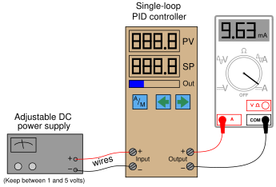

Subsections
PID control can be a frustrating subject for many students, even those with previous knowledge of calculus. At times it can seem like an impossibly abstract concept to master.
Thankfully, there is a relatively simple way to make PID control more “real,” and that is hands-on experience with a real PID controller. I advise you acquire an electronic single-loop PID controller1.49 and set it up with an adjustable DC power supply and milliammeter as such:

Most electronic controllers input a 1 to 5 VDC signal for the process variable (often with a 250 ohm resistor connected across the input terminals to generate a 1-5 VDC drop from a 4-20 mA current signal, which you will not need here). By adjusting the DC power supply between 1 and 5 volts DC, you will simulate a transmitter signal to the controller's input between 0% and 100%.
The milliammeter reads current output by the controller, 4 mA representing a 0% output signal and 20 mA representing a 100% output signal. With the power supply and milliammeter both connected to the appropriate terminals on the controller, you are all set to simulate input conditions and watch the controller's output response.
This arrangement does not simulate a process, and so there will be no feedback for you to observe. The purpose of this setup is to simply learn how the controller is supposed to respond to different PV and SP conditions, so that you may gain an intuitive “feel” for the PID algorithm to supplement your theoretical understanding of it. Experimentation with a real process (or even a simulated process) comes later (see section ![[*]](crossref.png) beginning on page ).
beginning on page ).
Once you have all components connected, you should check to see that everything works:
- Set power supply to 1, 3, and then 5 volts DC. The controller's PV display should read 0%, 50%, and 100%, respectively. The PV display should follow closely to the power supply voltage signal over time. If the display seems to “lag” behind the power supply adjustment, then it means the controller has damping configured for the input signal. You should keep the damping set to the minimum possible value, so the controller is as responsive as it can be.
- Put the controller in manual mode and set the output to 0%, 50%, and then 100%. The milliammeter should register 4 mA, 12 mA, and 20 mA, respectively.
After checking these basic functions, you may proceed to do the following experiments. For each experiment, I recommend setting the PV input signal to 3 volts DC (50%), and manually setting the output to 50% (12 mA on the milliammeter). When you are ready to test the P,I,D responses of the controller, place the controller into automatic mode and then observe the results.
- Set the controller PV input to 50% (3 volts) and the output value to 50% in manual mode.
- Configure the controller for reverse action (this is typically the default setting).
- Configure the PID settings for proportional action only. This may be done by setting the gain equal to 1 (P.B. = 100%), the integral setting to zero repeats per minute (maximum minutes per repeat), and the derivative setting to zero minutes. Some controllers have the ability to switch to a “proportional-only” algorithm – if your controller has that ability, this is the best way to get set up for this exercise.
- Switch the controller mode to “automatic.”
- Adjust the PV signal to 75% (4 volts) and observe the output. How far does the output signal move from its starting value of 50%? How does the magnitude of this step relate to the magnitude of the PV step? Does the output signal drift or does it remain the same when you stop changing the PV signal?
- Adjust the PV signal to 25% (2 volts) and observe the output. How far does the output signal move from its starting value of 50%? How does the magnitude of this step relate to the magnitude of the PV step? Does the output signal drift or does it remain the same when you stop changing the PV signal?
- Change the controller's gain setting to some different value and repeat the previous two steps. How does the output step magnitude relate to the input step-changes in each case? Do you see the relationship between controller gain and how the output responds to changes in the input?
- Smoothly vary the input signal back and forth between 0% and 100% (1 and 5 volts). How does the output respond when you do this? Try changing the gain setting again and re-checking.
- Switch the controller's action from reverse to direct, then repeat the previous step. How does the output respond now?
- Set the controller PV input to 50% (3 volts) and the output value to 50% in manual mode.
- Configure the controller for reverse action (this is typically the default setting).
- Configure the PID settings for integral action only. If the controller has an “I-only” mode, this is the best way to get set up for this exercise. If there is no way to completely turn off proportional action, then I recommend setting the gain value to the minimum non-zero value allowed, and setting the integral constant to an aggressive value (many repeats per minute, or fractions of a minute per repeat). If your controller does have an integral-only option, I recommend setting the integral time constant at 1 minute. Set derivative action at zero minutes.
- Switch the controller mode to “automatic.”
- Adjust the PV signal to 75% (4 volts) and observe the output. Which way does the output signal move? Does the output signal drift or does it remain the same when you stop changing the PV signal? How does this action compare with the proportional-only test?
- Adjust the PV signal to 25% (2 volts) and observe the output. Which way does the output signal move? Does the output signal drift or does it remain the same when you stop changing the PV signal? How does this action compare with the proportional-only test?
- Change the controller's integral setting to some different value and repeat the previous two steps. How does the rate of output ramping relate to the input step-changes in each case? Do you see the relationship between the integral time constant and how the output responds to changes in the input?
- Smoothly vary the input signal back and forth between 0% and 100% (1 and 5 volts). How does the output respond when you do this? Try changing the integral setting again and re-checking.
- Where must you adjust the input signal to get the output to stop moving? When the output finally does settle, is its value consistent (i.e. does it always settle at the same value, or can it settle at different values)?
- Switch the controller's action from reverse to direct, then repeat the previous two steps. How does the output respond now?
- Set the controller PV input to 50% (3 volts) and the output value to 50% in manual mode.
- Configure the controller for reverse action (this is typically the default setting).
- Configure the PID settings with a proportional (gain) value of 1 (P.B. = 100%) and an integral value of 1 repeat per minute (or 1 minute per repeat). Set derivative action at zero minutes.
- Switch the controller mode to “automatic.”
- Adjust the PV signal to 75% (4 volts) and observe the output. Which way does the output signal move? Does the output signal drift or does it remain the same when you stop changing the PV signal? How does this action compare with the proportional-only test and with the integral-only test?
- Adjust the PV signal to 25% (2 volts) and observe the output. Which way does the output signal move? Does the output signal drift or does it remain the same when you stop changing the PV signal? How does this action compare with the proportional-only test and with the integral-only test?
- Change the controller's gain setting to some different value and repeat the previous two steps. Can you tell which aspect of the output signal's response is due to proportional action and which aspect is due to integral action?
- Change the controller's integral setting to some different value and repeat those same two steps. Can you tell which aspect of the output signal's response is due to proportional action and which aspect is due to integral action?
- Smoothly vary the input signal back and forth between 0% and 100% (1 and 5 volts). How does the output respond when you do this? Try changing the gain and/or integral settings again and re-checking.
- Switch the controller's action from reverse to direct, then repeat the previous two steps. How does the output respond now?
- Set the controller PV input to 50% (3 volts) and the output value to 50% in manual mode.
- Configure the controller for reverse action (this is typically the default setting).
- Configure the PID settings with a proportional (gain) value of 1 (P.B. = 100%) and a derivative value of 1 minute. Set integral action at zero repeats per minute (maximum number of minutes per repeat).
- Switch the controller mode to “automatic.”
- Adjust the PV signal to 75% (4 volts) and observe the output. Which way does the output signal move? How does the output signal value compare while you are adjusting the input voltage versus after you reach 4 volts and take your hand off the adjustment knob? How does this action compare with the proportional-only test?
- Adjust the PV signal to 25% (2 volts) and observe the output. Which way does the output signal move? How does the output signal value compare while you are adjusting the input voltage versus after you reach 4 volts and take your hand off the adjustment knob? How does this action compare with the proportional-only test?
- Change the controller's gain setting to some different value and repeat the previous two steps. Can you tell which aspect of the output signal's response is due to proportional action and which aspect is due to derivative action?
- Change the controller's derivative setting to some different value and repeat those same two steps. Can you tell which aspect of the output signal's response is due to proportional action and which aspect is due to derivative action?
- Smoothly vary the input signal back and forth between 0% and 100% (1 and 5 volts). How does the output respond when you do this? Try changing the derivative setting again and re-checking.
- Switch the controller's action from reverse to direct, then repeat the previous two steps. How does the output respond now?
- Set the controller PV input to 50% (3 volts) and the output value to 50% in manual mode.
- Configure the controller for reverse action (this is typically the default setting).
- Configure the PID settings with a proportional (gain) value of 1 (P.B. = 100%), an integral value of 1 repeat per minute (or 1 minute per repeat), and a derivative action of 1 minute.
- Switch the controller mode to “automatic.”
- Adjust the PV signal to 75% (4 volts) and observe the output. Which way does the output signal move? Does the output signal drift or does it remain the same when you stop changing the PV signal? How does magnitude of the output signal compare while you are changing the input voltage, versus when the input signal is steady?
- Adjust the PV signal to 25% (2 volts) and observe the output. Which way does the output signal move? Does the output signal drift or does it remain the same when you stop changing the PV signal? How does magnitude of the output signal compare while you are changing the input voltage, versus when the input signal is steady?
- Change the controller's gain setting to some different value and repeat the previous two steps. Can you tell which aspect of the output signal's response is due to proportional action, which aspect is due to integral action, and which aspect is due to derivative action?
- Change the controller's integral setting to some different value and repeat the same two steps. Can you tell which aspect of the output signal's response is due to proportional action, which aspect is due to integral action, and which aspect is due to derivative action?
- Change the controller's derivative setting to some different value and repeat the same two steps. Can you tell which aspect of the output signal's response is due to proportional action, which aspect is due to integral action, and which aspect is due to derivative action?
- Smoothly vary the input signal back and forth between 0% and 100% (1 and 5 volts). How does the output respond when you do this? Try changing the gain, integral, and/or derivative settings again and re-checking.
- Switch the controller's action from reverse to direct, then repeat the previous two steps. How does the output respond now?